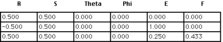
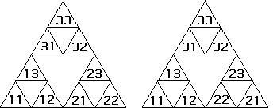

|  |
| and apply transformation T1, obtaining T1(S). |
| Both IFS tables | ||
| ||
| generate the equilateral Sierpinski gasket. | ||
| For the first table, it is not difficult to see the length 2 addresses are those on the left. | ||
| For the second table, the reflection in rule 2 has an effect on the addresses, for example, the length 2 addresses are shown on the right. | ||
|  | ||
| To see how address 21 winds up in the indicated position, start with the solid triangle S | ||
|
Return to Addresses